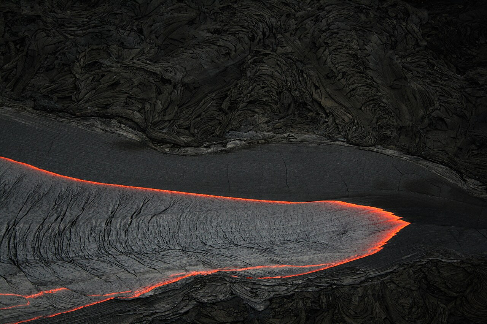
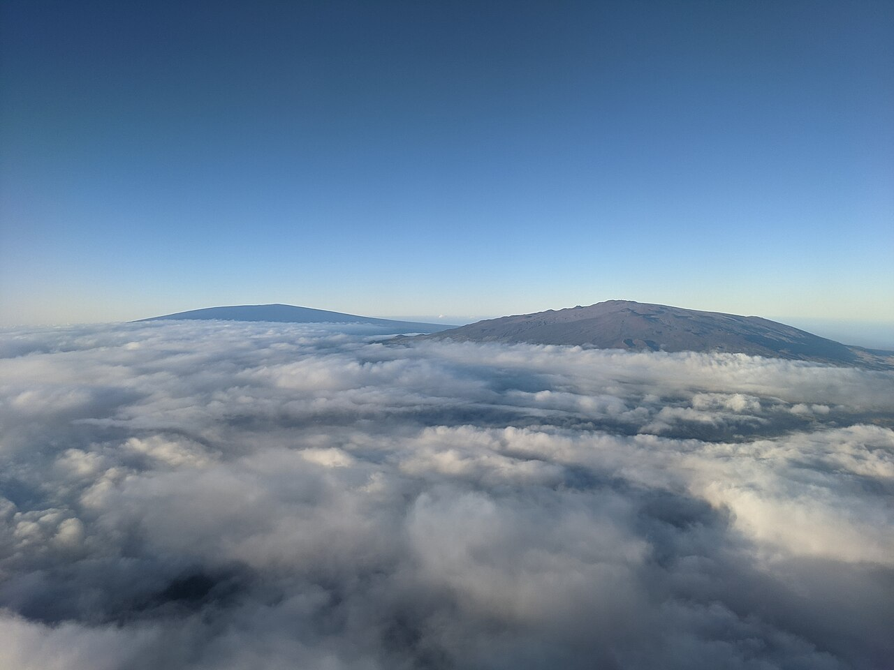
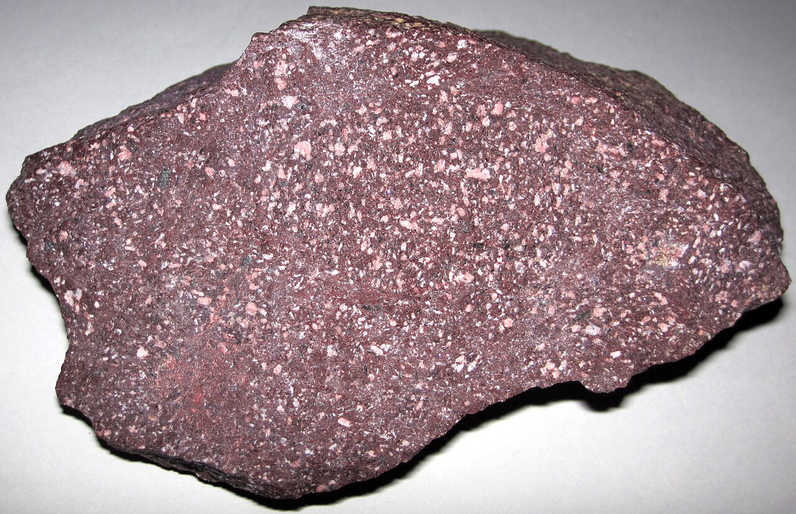
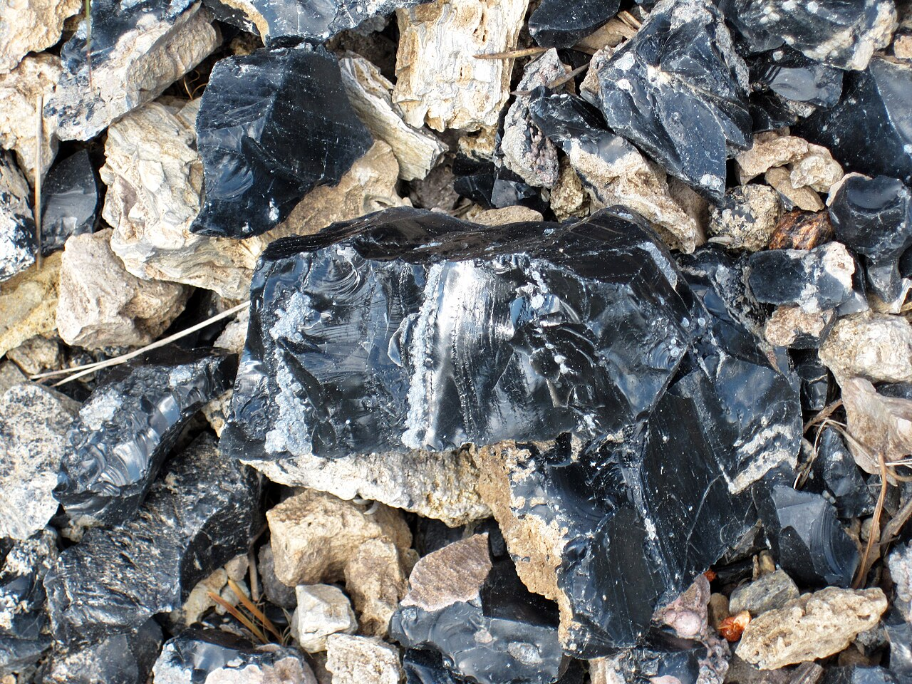

동기 유발
산꼭대기가 사라진 화산
교과서 p. 31학습 목표
- 암석의 순환 과정에서 화산 활동의 역할을 설명할 수 있다.
- 화산 활동으로 생성되는 암석의 특성을 추론할 수 있다.

Dave Harlow, USGS · 퍼블릭 도메인

Brocken Inaglory, CC BY-SA 3.0
피나투보산은 뾰족한 정상이 날아가고 화산재가 약 40 km 높이까지 솟았다.
하와이 화산과 달리 이렇게 격렬하게 분출한 까닭은 무엇일까?
하와이 화산과 달리 이렇게 격렬하게 분출한 까닭은 무엇일까?
조용히 분출하는 화산과 폭발적으로 분출하는 화산 영상을 차례로 보여 주고, 차이를 만드는 요인을 자유롭게 예상하게 합니다(예시: 마그마에 녹아 있는 기체의 양, 점성). 교과서 운영안은 3차시(암석의 순환·화산의 형태 / 편광 현미경과 화성암 조직 / 탐구)입니다.
핵심 개념 1
암석의 순환과 화산 활동
교과서 p. 31(1) 화산 활동이란?
- 지하 깊은 곳에서 생긴 마그마는 주변 암석보다 밀도가 작아, 지각의 약한 부분이나 틈을 따라 올라와 깊이 수 km~수십 km에 마그마방을 만든다.
- 마그마방에서 휘발 성분이 늘어나 내부 압력이 높아지면 마그마가 지표로 분출한다.
- 화산 활동: 지하 깊은 곳에서 생성된 마그마가 지표로 분출하는 현상
(2) 암석의 순환 속 화산 활동의 역할
- 암석은 주변 환경이 바뀌면 끊임없이 다른 암석으로 변하며 순환한다.
- 화성암 → 퇴적암: 지표로 드러난 암석이 풍화·침식되어 운반·퇴적되고, 퇴적물이 속성 작용을 거쳐 퇴적암이 된다.
- → 변성암: 화성암이나 퇴적암이 변성 작용을 받으면 구성 광물과 조직이 변해 변성암이 된다.
- → 마그마 → 화성암: 암석이 높은 열을 받아 녹으면 마그마가 되고, 마그마가 식어 굳으면 다시 화성암이 된다.
- 화산 활동의 역할: 지구 내부의 물질을 지표로 올려 새로운 화성암을 만든다.
인터랙티브 그림암석의 순환: 이름을 눌러 보자
화살표는 암석이 바뀌는 방향과 그때 일어나는 작용이다. '화산 활동'을 눌러 이 순환에서 화산 활동이 하는 일을 확인하자.
핵심 개념 2
화산의 형태와 화산 분출물
교과서 p. 32(1) 마그마의 성질이 화산의 모습을 결정한다
- 점성: 마그마는 화학 조성과 온도에 따라 점성이 다르다. SiO₂ 함량이 적고 온도가 높을수록 점성은 작고 유동성은 크다.
- 기체: 마그마에는 수증기, 이산화 탄소, 이산화 황, 염화 수소 등이 녹아 있으며, 기체 함량이 많을수록 폭발적으로 분출한다.
- 순상 화산: 점성이 작고 유동성이 큰 마그마가 분출 → 경사가 완만한 방패 모양 (예: 마우나로아산)
- 성층 화산: 점성이 큰 마그마와 화산 쇄설물이 번갈아 분출 → 경사가 비교적 급하고 층상 구조 (예: 레이니어산)

Mds08011, CC BY 4.0

Timothy A. Gonsalves, CC BY-SA 4.0
시뮬레이션 1마그마의 성질을 바꿔 화산을 만들어 보자
현무암질 마그마(SiO₂ 적음, 고온)와 유문암질 마그마(SiO₂ 많음, 저온)를 각각 만들어 화산의 모양과 분출 양상을 비교해 보자. 기체의 양만 늘리면 무엇이 바뀌는지도 확인하자. 경향을 보여 주기 위한 단순화한 모형이다.
(2) 화산 분출물
- 화산 분출물은 기체(화산 가스), 액체(용암), 고체(화산 쇄설물)로 나눈다. 마그마의 성질에 따라 분출되는 물질이 다르다.
- 화산 가스: 마그마가 지표 가까이 오면 압력이 줄어 녹아 있던 기체가 분리되어 나온다. 대부분 수증기이다.
- 용암: 마그마가 지표로 올라와 분출한 것
- 화산 쇄설물: 분출된 크고 작은 암석 조각. 기체가 많고 점성이 큰 마그마가 분출할 때 흔하며, 크기에 따라 나눈다.
| 화산 쇄설물 | 화산진 | 화산재 | 화산력 | 화산암괴 |
|---|---|---|---|---|
| 입자 크기 | 0.063 mm 이하 | 0.063 ~ 2 mm | 2 ~ 64 mm | 64 mm 이상 |
핵심 개념 3
편광 현미경으로 관찰한 화성암의 조직
교과서 p. 33, 35(1) 편광 현미경
- 화성암은 마그마의 냉각 속도에 따라 조직이 달라지며, 조직은 화성암을 분류하는 기준이 된다. 편광 현미경을 쓰면 조직을 자세히 관찰할 수 있다.
- 편광 현미경: 광물의 크기·모양·배열을 관찰하는 현미경으로, 한 방향으로 진동하는 빛만 통과시키는 편광판이 달려 있다.
- 하부 편광판: 회전 재물대 아래에 고정
- 상부 편광판: 경통에 넣거나 뺄 수 있음
- 개방 니콜: 상부 편광판을 뺀 상태 / 직교 니콜: 상부 편광판을 넣은 상태
- 관찰하려면 암석을 빛이 통과할 만큼 얇게 갈아 슬라이드 글라스에 붙인 박편을 만들어야 한다.
(2) 냉각 속도와 화성암의 조직
- 화산암 (지표 부근에서 빠르게 식음)
- 세립질 조직: 결정의 크기가 매우 작다.
- 유리질 조직: 결정이 거의 없다.
- 반상 조직: 세립질·유리질 바탕에 큰 결정(반정)이 박혀 있다. 지하에서 천천히 식던 마그마가 올라와 지표 부근에서 빠르게 식어 생긴다.
- 심성암 (지하 깊은 곳에서 천천히 식음)
- 조립질 조직: 결정의 크기가 크다.
- 즉, 조직을 보면 암석의 종류와 생성 환경을 알 수 있다.

Darla Sondrol, CC0

James St. John, CC BY 2.0

James St. John, CC BY 2.0
시뮬레이션 2냉각 속도에 따라 결정은 어떻게 자랄까?
주황색은 아직 녹아 있는 마그마, 색이 있는 조각 하나하나는 광물 결정이다. 다 굳은 뒤 어두운 갈색으로 남는 부분은 결정이 되지 못한 유리질이다. 네 가지 환경을 차례로 실행해 결정의 수와 크기를 비교해 보자.
탐구 활동
편광 현미경으로 화산암과 심성암의 조직 비교·관찰하기
교과서 p. 34탐구 · 현무암과 화강암 박편 관찰
목표 편광 현미경으로 화산암과 심성암의 조직을 관찰하고 비교할 수 있다.
준비물 편광 현미경, 현무암 박편, 화강암 박편
- 회전 재물대에 현무암 박편을 올려놓는다.
- 초점 조절 나사로 박편과 대물렌즈 사이 거리를 조절하며 초점을 맞춘다. 박편과 대물렌즈가 닿아 깨지지 않도록 눈으로 확인하며 조절한다.
- 상부 편광판을 뺀 상태(개방 니콜)로 현무암의 조직을 관찰한다.
- 상부 편광판을 넣은 상태(직교 니콜)로 현무암의 조직을 관찰한다.
- 같은 방법으로 화강암의 조직을 관찰한다.

Helgi, CC BY-SA 4.0
시뮬레이션 3가상 편광 현미경
실제 현미경이 없을 때 원리를 익히는 보조 도구이다. 직교 니콜에서 재물대를 돌리면 광물마다 밝기가 바뀌고, 유리질은 계속 검게 보인다. 실제 관찰과 함께 사용하자.
결과 및 정리
1. 편광 현미경으로 관찰한 현무암과 화강암의 조직을 비교하여 설명해 보자.
현무암은 광물 결정이 매우 작거나 결정이 거의 없는 조직을 보인다. 화강암은 광물 결정이 비교적 크고 크기가 고른 조직을 보인다.
2. 현무암과 화강암의 조직이 다른 까닭을 암석의 생성 환경과 관련지어 추론해 보자.
마그마가 식어 굳은 환경이 다르기 때문이다. 현무암은 마그마가 지표로 분출하거나 지표 가까이에서 빠르게 식어 결정이 자랄 시간이 없어 결정이 작다. 화강암은 지하 깊은 곳에서 천천히 식어 결정이 충분히 자라 결정이 크다.
스스로 확인하기
1. 암석의 순환 과정에서 화산 활동은 어떤 역할을 하는가?
지구 내부의 물질을 지표로 올려 새로운 화성암을 만드는 역할을 한다.
2. 화산암과 심성암의 조직이 다른 까닭은?
화성암은 마그마의 냉각 속도에 따라 조직이 달라진다. 지표 부근에서 빠르게 식은 화산암은 세립질·유리질·반상 조직이, 지하 깊은 곳에서 천천히 식은 심성암은 조립질 조직이 나타난다.
3. 창의력 더하기 · 백두산이 분화해 화산재가 우리나라로 날아온다면, 피해를 줄이는 방법은?
방진 마스크, 구급약품, 손전등 등을 미리 준비한다. 화산재가 떨어질 때는 방진 마스크를 쓰고 재난 방송을 듣는다. 밖에 있다면 건물이나 차 안으로 대피하고, 실내에서는 문과 창문을 닫고 젖은 수건이나 테이프로 틈을 막는다.
형성 평가
개념 확인 문제
그림 출처
사진은 Wikimedia Commons의 퍼블릭 도메인 또는 CC 라이선스 자료이며, 각 그림 아래에 저작자와 라이선스를 표시했습니다. 모식도와 시뮬레이션은 직접 만들었습니다. 화산 쇄설물의 크기 구분은 교과서 자료(지질환경과학, 2016)를 따랐습니다.